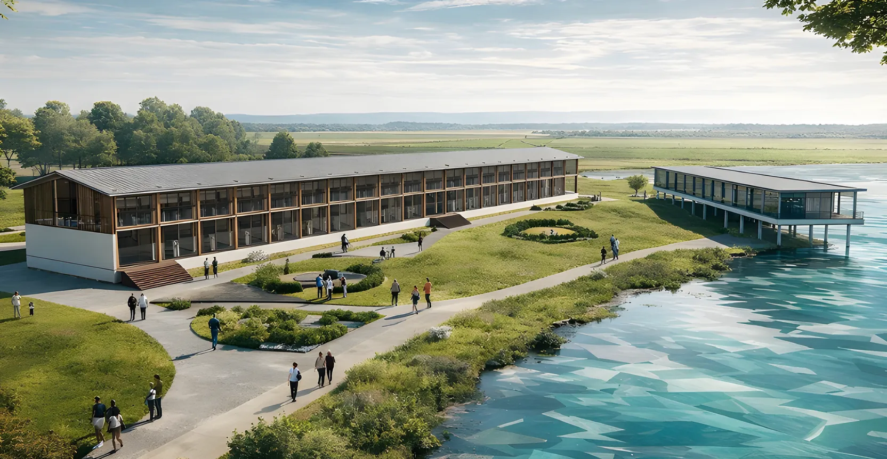
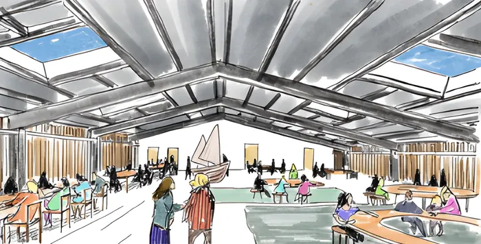
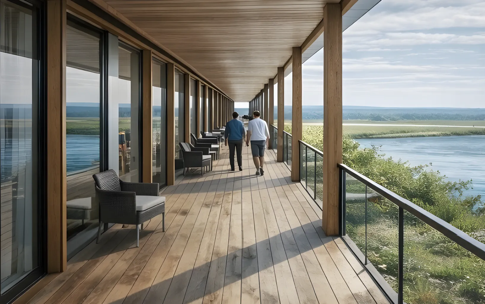
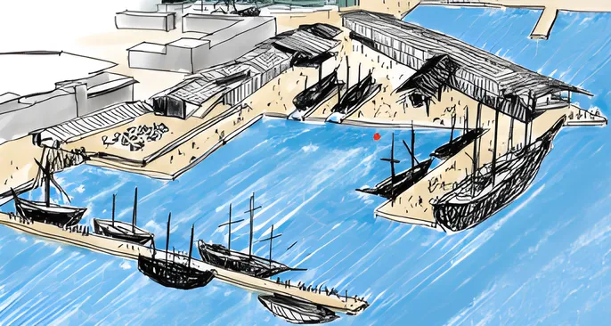
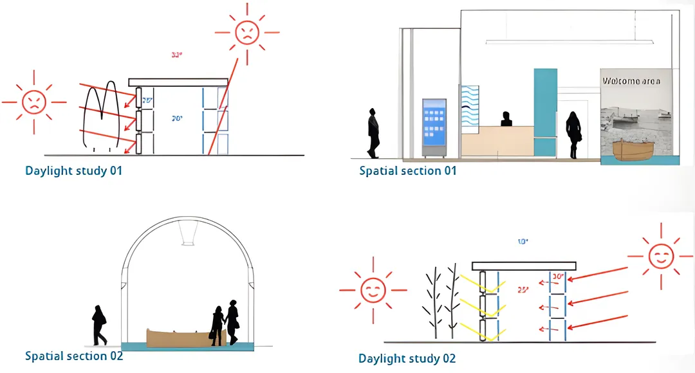

Quiet Sailing
Музеј, марина и рибен пазар долж брегот на Охридското Езеро, околу чамците што и денес работат таму.

- Тип
- Музеј, марина и рибен пазар
- Локација
- Охридско Езеро
- Година
- 2025–26
- Статус
- Студиски проект, Урбан дизајн 1
Локацијата е на брегот на Охридското Езеро. Проектот е една непрекината патека: патеките и платформите ја следат линијата на водата и нудат различни начини да се стигне до неа.
Прво дојде истражувањето: рибите во езерото, традиционалните и работните чамци и начинот на кој жителите и посетителите го користат брегот. Од тоа произлезе линеарен план, со музејот на едниот крај и рибарското пристаниште, ресторанот и рибарницата на другиот.
Дрвото, отворените рамки и долгите погледи кон водата ја пренесуваат локалната рибарска традиција во јавна зграда. Има место и за активност и за тивко седење покрај езерото.







